10. Kill little martians¶
In this lab we are going to program a game that consists of killing, with a spaceship's laser, Martians that fall from the top of the screen.
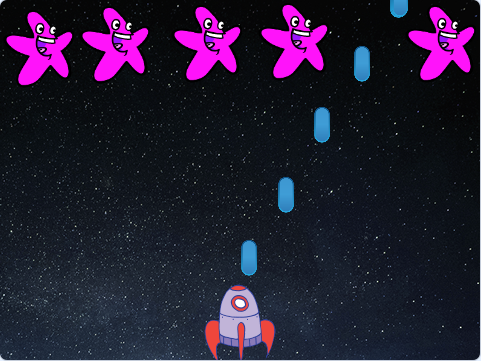{kind=link}
We start the Scratch editor.
Press the language button
 in the top bar and choose English.
in the top bar and choose English.We delete the cat object by clicking on the trash can icon.
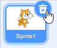
Now we choose a suitable backdrop for our game. We changed the stage backdrop for a sky with stars.
Press the button choose a backdrop .
We look in the Space section.
and select the Stars backdrop.
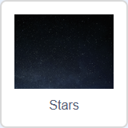Added a new character, a spaceship.
Press the button choose an object .
We look in the All section.
and select the Rocketship object.
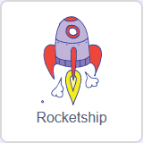We added a new variable x that will store the position of the spaceship.
Press the variables button 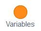,
We change the name of the variable to x
We make the program to start the ship at the bottom of the screen and make it move to the right and to the left.
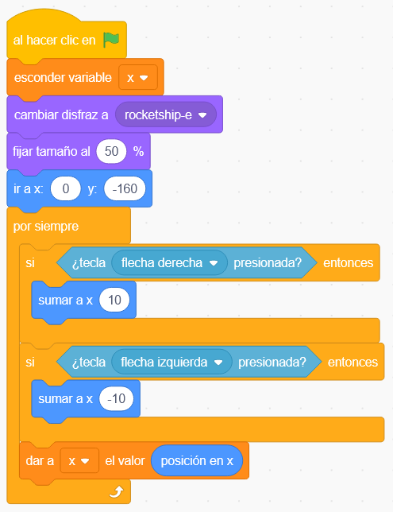Press the green flag
 to test the operation of the program.
to test the operation of the program.Now we add a new object, a button that will make a laser beam blue.
Press the button choose an object .
We look in the All section.
and select the Button2 object.

We program the button to behave like a laser beam. at the beginning we will turn the button up with small size.
Each time the space key is pressed a new laser beam will appear.
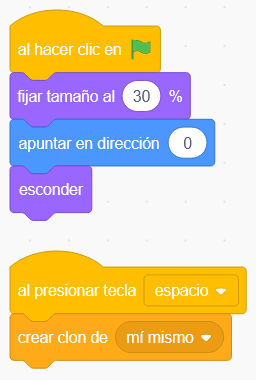Each laser beam will travel up from the ship's current position to the top of the screen where it will disappear.
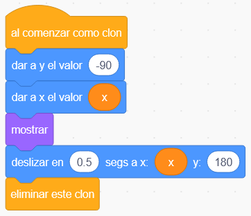Press the green flag
to test the operation of the program.Added a new object, a Martian.
Press the button choose an object .
We look in the Animals section.
and select the Starfish object.
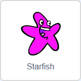We carry out the necessary program so that clones of the Martians appear every so often in the upper part of the screen.
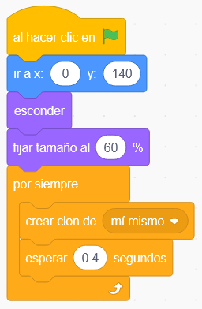We now complete the program for each clone. Each clone will appear in a random horizontal position. then the clone will move down bit by bit until it reaches the bottom or is hit by a laser beam. At that moment it disappears.
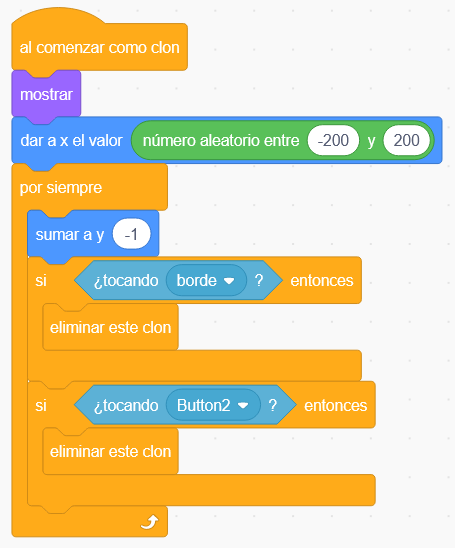Press the green flag
to test the operation of the program.
{kind=link}
{kind=link}
{kind=link}
{kind=link}
{kind=link}
{kind=link}
{kind=link}
Challenges¶
- Add a condition for the ship to disappear when touched by a Martian and the game will be over.
- Change the parameters of the program to adjust its difficulty making more Martians appear per second and go down faster.
- Adds a double fire function for the spaceship when pressing the "up arrow" key.
- Invent another original modification for the program.